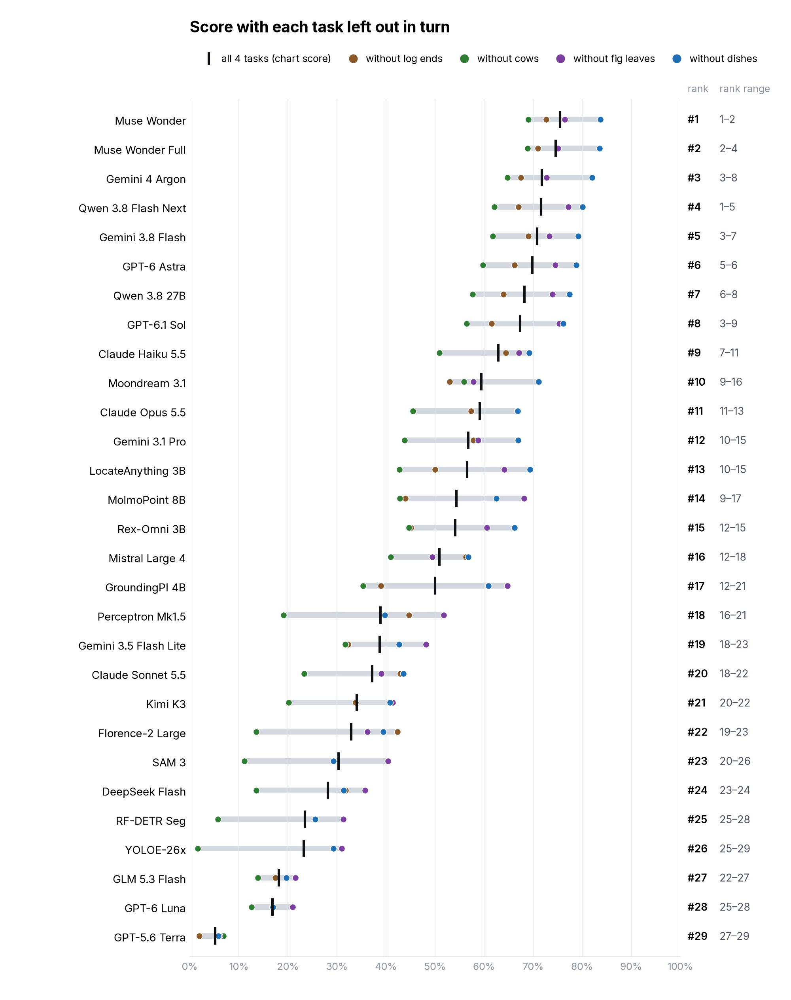

Photo chart: what if one task were left out?
Same data as the published v2.7 chart. Each model's score is recomputed on every group of 3 of the 4 tasks (4 groups), the chart's way: average over tasks of the average over tries. The black tick is the chart's score; each coloured dot is the score without one task. A long grey band means the model's place depends on which tasks are in the benchmark.

Best-value line in each group
- all 4: YOLOE-26x → RF-DETR Seg → SAM 3 → Florence-2 Large → Moondream 3.1 → Claude Haiku 5.5 → Qwen 3.8 Flash Next → Gemini 4 Argon → Muse Wonder
- without log ends: YOLOE-26x → RF-DETR Seg → SAM 3 → Florence-2 Large → Moondream 3.1 → Claude Haiku 5.5 → Qwen 3.8 Flash Next → Gemini 3.8 Flash → Muse Wonder
- without cows: YOLOE-26x → RF-DETR Seg → SAM 3 → Florence-2 Large → Moondream 3.1 → Qwen 3.8 Flash Next → Gemini 4 Argon → Muse Wonder
- without fig leaves: YOLOE-26x → RF-DETR Seg → SAM 3 → Moondream 3.1 → GroundingPI 4B → Claude Haiku 5.5 → Qwen 3.8 Flash Next
- without dishes: YOLOE-26x → SAM 3 → Florence-2 Large → Moondream 3.1 → Qwen 3.8 Flash Next → Gemini 4 Argon → Muse Wonder
All numbers
| Model | log ends | cows | fig leaves | dishes | all 4 | without log ends | without cows | without fig leaves | without dishes | rank range | |
|---|---|---|---|---|---|---|---|---|---|---|---|
| Muse Wonder | 83.9 | 94.7 | 72.5 | 50.7 | 75.4 #1 | 72.6 #1 | 69.0 #1 | 76.4 #2 | 83.7 #1 | 1–2 | |
| Muse Wonder Full | 85.6 | 91.8 | 73.2 | 48.0 | 74.6 #2 | 71.0 #2 | 68.9 #2 | 75.1 #4 | 83.5 #2 | 2–4 | |
| Gemini 4 Argon | 84.6 | 92.6 | 68.9 | 40.9 | 71.8 #3 | 67.5 #4 | 64.8 #3 | 72.7 #8 | 82.0 #3 | 3–8 | |
| Qwen 3.8 Flash Next | 85.4 | 100.0 | 54.9 | 46.1 | 71.6 #4 | 67.0 #5 | 62.1 #4 | 77.2 #1 | 80.1 #4 | 1–5 | |
| Gemini 3.8 Flash | 76.2 | 98.0 | 63.4 | 45.7 | 70.8 #5 | 69.0 #3 | 61.8 #5 | 73.3 #7 | 79.2 #5 | 3–7 | |
| GPT-6 Astra | 80.7 | 100.0 | 55.7 | 43.0 | 69.8 #6 | 66.2 #6 | 59.8 #6 | 74.5 #5 | 78.8 #6 | 5–6 | |
| Qwen 3.8 27B | 81.1 | 100.0 | 51.1 | 40.8 | 68.3 #7 | 64.0 #8 | 57.7 #7 | 74.0 #6 | 77.4 #7 | 6–8 | |
| GPT-6.1 Sol | 84.9 | 100.0 | 43.6 | 40.9 | 67.4 #8 | 61.5 #9 | 56.5 #8 | 75.3 #3 | 76.2 #8 | 3–9 | |
| Claude Haiku 5.5 | 58.2 | 99.0 | 50.3 | 44.1 | 62.9 #9 | 64.5 #7 | 50.9 #10 | 67.1 #10 | 69.2 #11 | 7–11 | |
| Moondream 3.1 | 78.8 | 70.2 | 64.3 | 24.4 | 59.4 #10 | 53.0 #13 | 55.8 #9 | 57.8 #16 | 71.1 #9 | 9–16 | |
| Claude Opus 5.5 | 64.4 | 100.0 | 36.1 | 36.0 | 59.1 #11 | 57.4 #11 | 45.5 #11 | 66.8 #11 | 66.8 #13 | 11–13 | |
| Gemini 3.1 Pro | 53.8 | 96.0 | 50.9 | 26.5 | 56.8 #12 | 57.8 #10 | 43.8 #13 | 58.8 #15 | 66.9 #12 | 10–15 | |
| LocateAnything 3B | 76.2 | 98.0 | 33.8 | 18.1 | 56.5 #13 | 50.0 #14 | 42.7 #15 | 64.1 #13 | 69.3 #10 | 10–15 | |
| MolmoPoint 8B | 85.5 | 88.9 | 13.0 | 29.9 | 54.3 #14 | 43.9 #17 | 42.8 #14 | 68.1 #9 | 62.5 #15 | 9–17 | |
| Rex-Omni 3B | 81.2 | 82.5 | 34.9 | 17.9 | 54.1 #15 | 45.1 #15 | 44.7 #12 | 60.5 #14 | 66.2 #14 | 12–15 | |
| Mistral Large 4 | 34.6 | 80.6 | 55.2 | 33.0 | 50.8 #16 | 56.3 #12 | 40.9 #16 | 49.4 #18 | 56.8 #17 | 12–18 | |
| GroundingPI 4B | 83.1 | 93.9 | 5.7 | 17.2 | 50.0 #17 | 39.0 #21 | 35.3 #17 | 64.8 #12 | 60.9 #16 | 12–21 | |
| Perceptron Mk1.5 | 21.4 | 98.0 | 0.0 | 36.1 | 38.9 #18 | 44.7 #16 | 19.2 #21 | 51.8 #17 | 39.8 #21 | 16–21 | |
| Gemini 3.5 Flash Lite | 58.0 | 59.6 | 10.3 | 26.8 | 38.7 #19 | 32.2 #23 | 31.7 #18 | 48.1 #19 | 42.6 #19 | 18–23 | |
| Claude Sonnet 5.5 | 20.1 | 78.8 | 31.7 | 18.2 | 37.2 #20 | 42.9 #18 | 23.3 #19 | 39.0 #22 | 43.5 #18 | 18–22 | |
| Kimi K3 | 34.7 | 75.8 | 12.1 | 13.6 | 34.0 #21 | 33.8 #22 | 20.1 #20 | 41.4 #20 | 40.8 #20 | 20–22 | |
| Florence-2 Large | 4.5 | 90.9 | 22.8 | 13.3 | 32.9 #22 | 42.3 #19 | 13.5 #23 | 36.2 #23 | 39.4 #22 | 19–23 | |
| SAM 3 | 0.0 | 87.9 | 0.0 | 33.3 | 30.3 #23 | 40.4 #20 | 11.1 #26 | 40.4 #21 | 29.3 #24 | 20–26 | |
| DeepSeek Flash | 17.1 | 71.9 | 5.1 | 18.3 | 28.1 #24 | 31.8 #24 | 13.5 #24 | 35.8 #24 | 31.4 #23 | 23–24 | |
| RF-DETR Seg | 0.0 | 76.7 | 0.0 | 17.2 | 23.5 #25 | 31.3 #25 | 5.7 #28 | 31.3 #25 | 25.6 #26 | 25–28 | |
| YOLOE-26x | 0.0 | 87.9 | 0.0 | 4.9 | 23.2 #26 | 30.9 #26 | 1.6 #29 | 30.9 #26 | 29.3 #25 | 25–29 | |
| GLM 5.3 Flash | 20.3 | 30.9 | 7.9 | 13.5 | 18.2 #27 | 17.4 #27 | 13.9 #22 | 21.6 #27 | 19.7 #27 | 22–27 | |
| GPT-6 Luna | 16.9 | 29.6 | 4.3 | 16.5 | 16.8 #28 | 16.8 #28 | 12.6 #25 | 21.0 #28 | 16.9 #28 | 25–28 | |
| GPT-5.6 Terra | 14.9 | 0.0 | 2.5 | 3.3 | 5.2 #29 | 1.9 #29 | 6.9 #27 | 6.1 #29 | 5.8 #29 | 27–29 |
Drawn by uv run scripts/task_subsets.py point-benchmark-v2.7. Data: subsets.csv, frontiers.json.